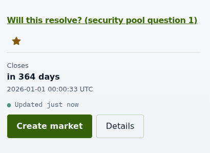
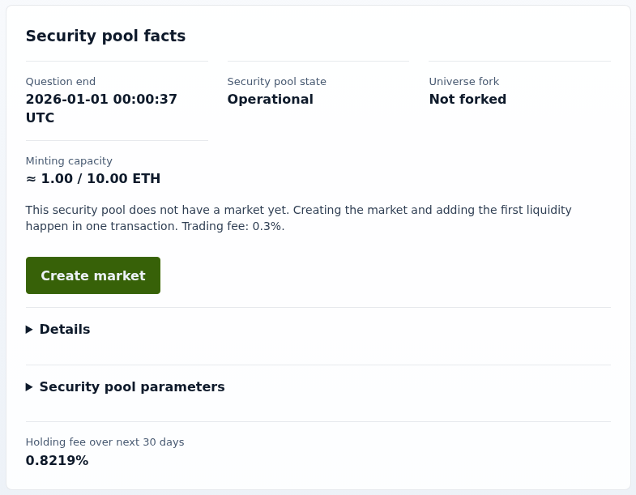
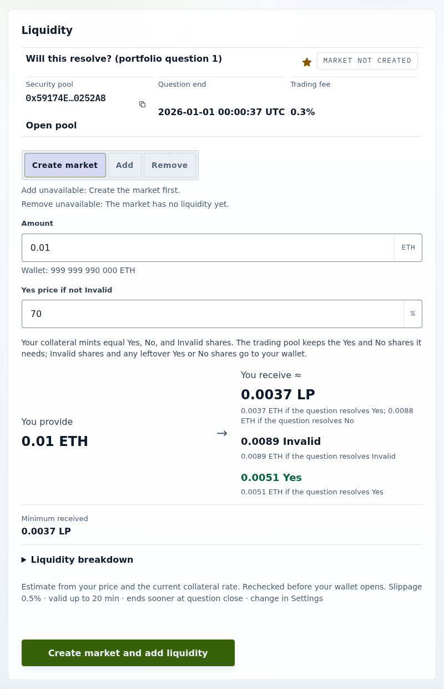
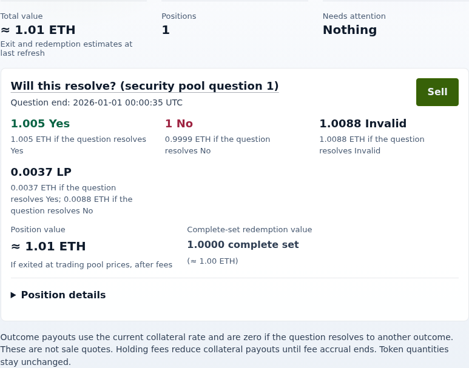

Tutorial
Your first Trading market
You will open trading for a question ledger by creating its trading pool and seeding it at a 70% conditional Yes price (the Yes price if the market does not resolve Invalid) with 0.01 ETH. You finish with LP tokens (the trading pool's liquidity-provider tokens) and separately held Invalid shares in your wallet, and the market listed as open.
Before you start
Trading is an exchange for Statoblast outcome shares: a trading pool swaps the Yes and No shares of exactly one question ledger, and a question ledger without one has no market yet. In the UI, creating the trading pool is called creating a market.
To practise without a wallet, run bun run app:serve:trading and open http://localhost:4163/?simulate=1&genesis=yes&simScenario=deployed#/create-market. That simulator scenario has one question ledger, at 0x8C169Dc275b1a7f639CeED58E0F618c9C8937c3e, and no trading pool; the screenshots below come from it. For a live network, follow Configure the Trading UI, and if the UI opens the deployment screen, complete Deploy the Trading contracts first. Fund the wallet with the deposit plus gas.
Open a question without a market
- Select the Create tab and paste the question ledger address into Search questions; the UI lists each question ledger as a question. In the simulator, use the address above; on a live network, copy it from Statoblast.
- Select Open question. The form opens with the badge MARKET NOT CREATED and Create market selected, and the question ledger is saved as a favorite.
To check eligibility before seeding, return to the Create tab and open Details on the question card. Review Minting capacity, then select Create market to return to the form. If the button is disabled, the page gives the reason.


Create and seed the trading pool
- Enter
0.01in Amount and70in Yes price if not Invalid. - Read the estimate: You provide 0.01 ETH, You receive LP tokens, about 0.0089 Invalid after the minting fee, and the Yes shares the trading pool did not need.
- Select Create market and add liquidity and confirm the one transaction that creates and seeds the trading pool. It reverts if it would mint fewer LP tokens than the estimate allows after your slippage tolerance, which you set under Settings.

Check the result
Open the Markets tab. The market is listed with the badge TRADING OPEN and a conditional price of 70% Yes. Then open Portfolio: the market shows your LP tokens, your Invalid, and the spare Yes as separate holdings.

See Conditional pricing for how the reserves set the displayed price.
Next: make your first trade against the trading pool you just created.